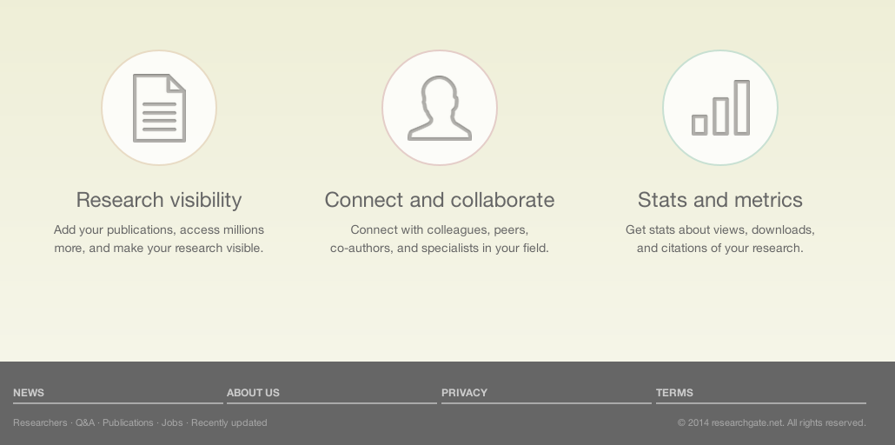
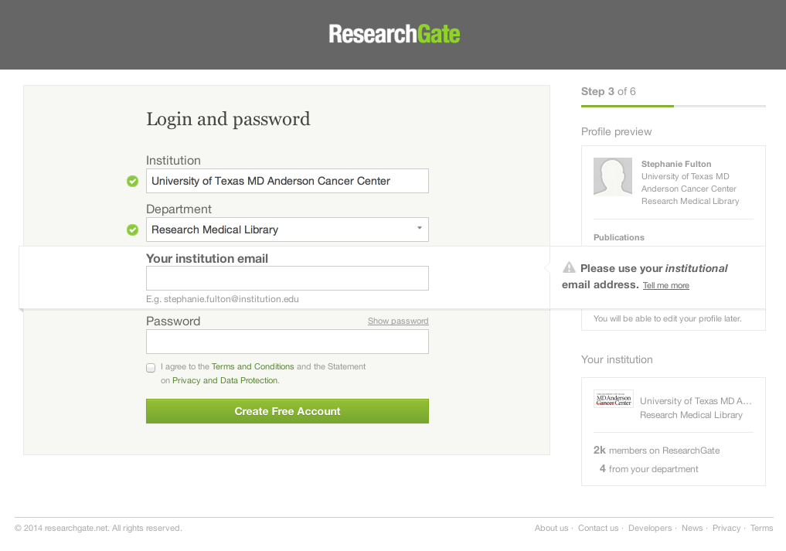
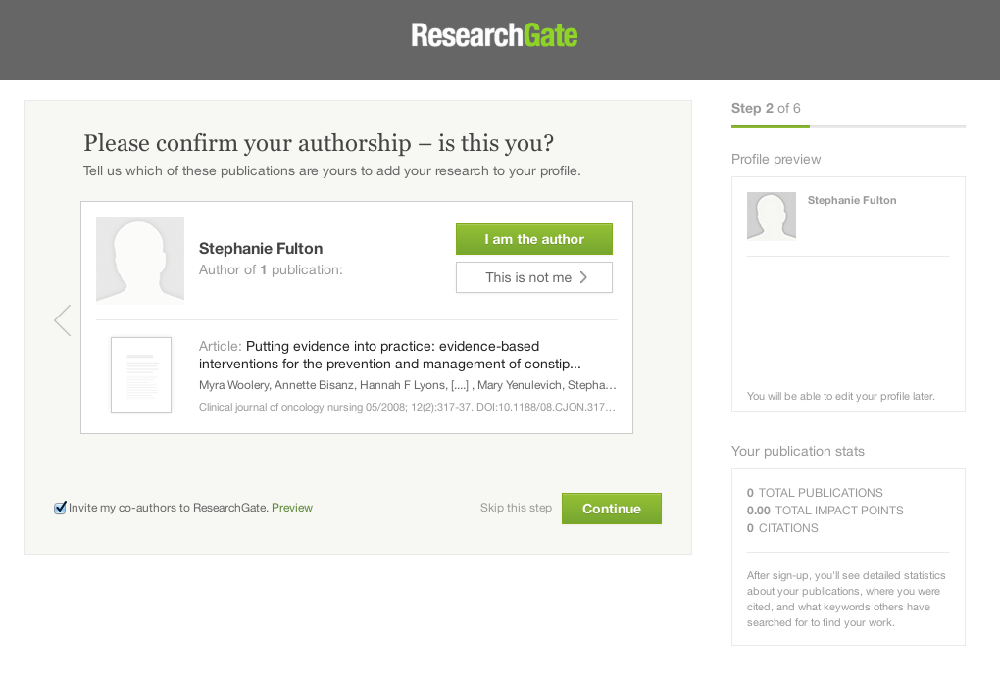
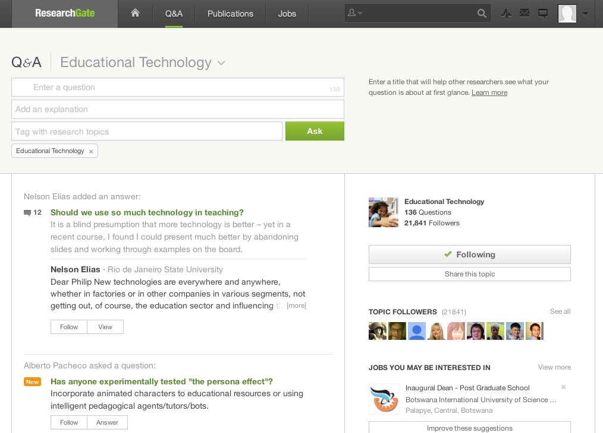
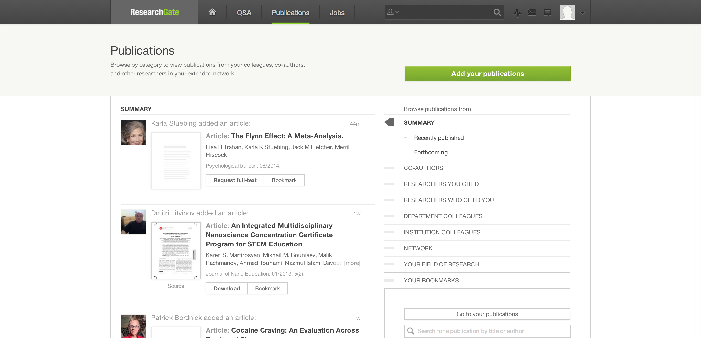
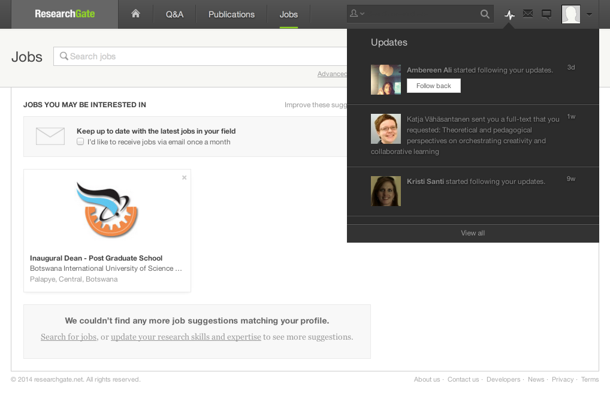

ResearchGate was founded in 2008 in Boston and shortly thereafter moved their headquarters to Berlin. They grew slowly at first and by 2011 had over 1 million users. As of this year, that number has grown to 4 million.
ResearchGate is an online social networking community where you can share your scientific publications, you can see what others are publishing and researching, you can collaborate with your colleagues, you can ask questions of those in your field and you can use ResearchGate as a place to show you online CV and find a job. Really, it's like LinkedIn on steroids for researchers and scientists.

Before we get into the step-by-step usage let me mention that ResearchGate has been getting a little bit of bad press lately. Users have been complaining that they've been receiving too much spam, also there have been complaints from users saying that e-mails origintating from ResearchGate are being sent to their colleagues under their names without their knowledge. Finally, more serious claims have been made, where authors have seen the full text of their papers being put up by ResearchGate without their permission.Even though it is eight years old, ResearchGate is definitely a start up. It received it's third round of investor funding this year to the tune of $35 million, one of those third round investors was Bill Gates. They are not currently making any money and it is likely they're trying to figure out how to do so. While the founders claim that their goal is to actually change how science is done for the better, it will be difficult for them to do that and also figure out how to make a profit.
ResearchGate is an interesting tool and it is definitely a convenient social networking site for connecting with other academic colleagues. More importantly, it is way to figure out which academic colleagues you need to connect with. With the current political climate as it is, where public funding of research is diminished and private funding of research is increasing, I can see a site like ResearchGate devolving much like Monster.com where it is now difficult to find quality job postings.
In order to register for ResearchGate you have to have an e-mail address from a preapproved institution. If you're interested in getting a ResearchGate login you can use your university of Houston.edu E-mail address. The registration process asks you to identify your institution first.

ResearchGate then tries identified you from its database of authors and papers. It will show you names that it matched up with yours and will ask you to identify yourself as an author on those published papers.
One of the major surprises of the registration pases was the lack of a requirement for strong passwords. Once your in, you will be prompted to set up your profile. It is very Facebook-like where you would create a biography, add contact information, identify your publications and skills and select areas of interest.The dashboard is a display of the live feed of activity in your network. From the shortcut bar you have access to the other main areas of ResearchGate, Q&A, Publications and Jobs. Q&A is where you can pose questions for those with similar research interest to respond to.

The Publications page is where you can browse by topic or network or search for an article, author or subject. This is the area of ResearchGate where most of those currently enrolled in graduate school can get the most benefit. During Module 1, I was looking for an article that was not available to me electronically in any way. I contacted the author through ResearchGate to see if she would send me a copy and she very kindly did so. When investigating ResearchGate in my usual social media haunts, this was by far the most common reason ResearchGate was recommended.
The Jobs page is where you can browse or post open positions.
ResearchGate could only be used as a discovery tool for the majority of higher education students and I would recommend many other resources for finding literature and experts before this one. I would recommend ResearchGate to all STEM librarians and with one caveat, to doctoral students in the sciences and social sciences. Once you register make sure that you change your settings so that you do not end up spamming everyone in your network. While it has it's flaws the vast majority of researchers in the world are on this network and as a doctoral student it is important to keep up with what others in your field are doing.
Below, you can see one of the embedded "developer's" tool. This is a little piece of javascript that you can add to your website. It will update as the database is updated, with the total number and recent citations from ResearchGate participants at the University of Houston. In addition to the institutional level plugin, they also provide a departmental and jobs plugin. link
Reference
Li, C. (2014). How ResearchGate is reimagining science with the help of Bill Gates. Retrieved July 03, 2014, from http://tech.eu/features/1052/researchgate/